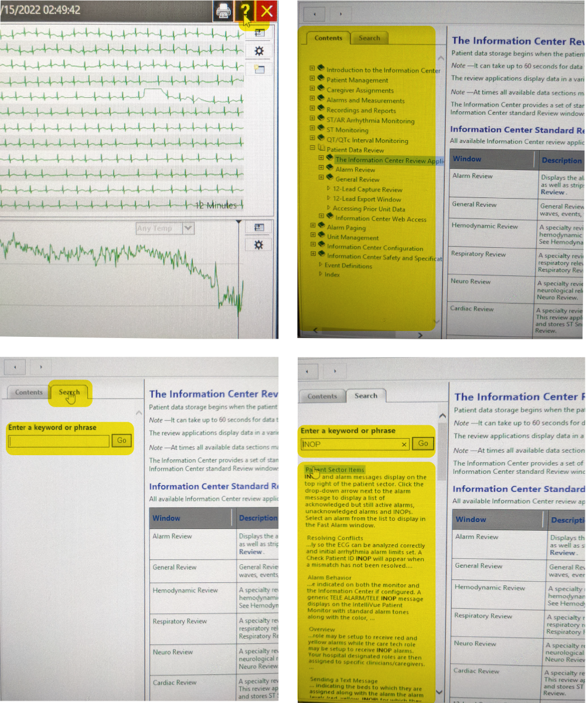
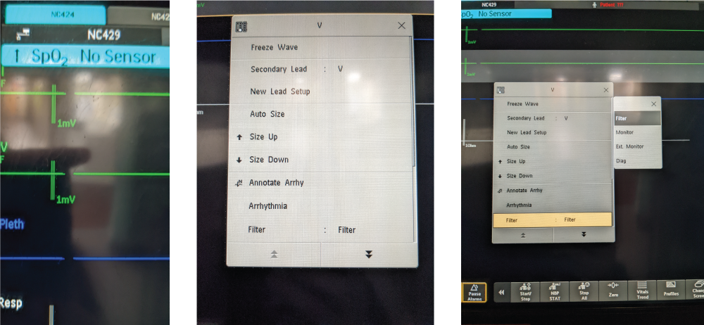
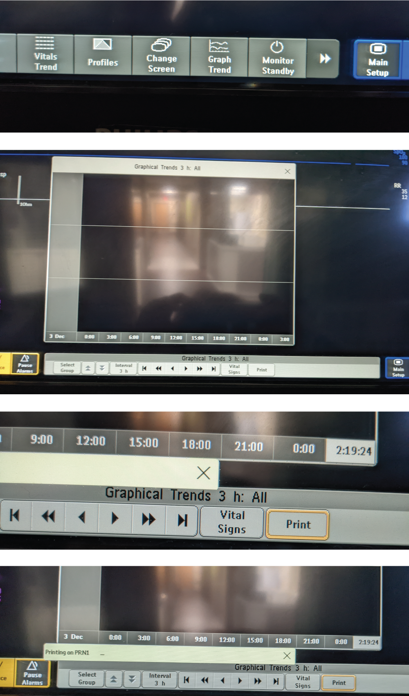

Phillips
Product Information:
You can view Phillips product information, including the serial number, (which you will need should you ever require contacting Phillips support) by selecting Phillips on the top right hand corner of any monitor.
Product Support:
By selecting the search icon on the top, far right of the patient window you can find product support by searching alarm messages, and event definitions, etc...
If you are unable to troubleshoot an issue the first step is to contact Biomed. Biomed can be reached throughout the day by calling the number listed in the monitor room.
During the night there is a Biomed oncall person. Before calling the oncall Biomed you should communicate with the charge R.N to determine if the issue warrants immediate resolution.
If Biomed is unable to solve the issue then biomed will escalate the issue and get Phillips involved.
Bedside Monitor
Butterfly Mode
Some actions can only be performed at the bedside monitor. These actions include filtering leads, printing trends & placing a patient on butterfly mode.
To place a patient on "Butterfly Mode", select profile in the top right corner of the screen, a list of options will appear, including butterfly mode. Once this mode is selected all waveform colors will change to blue & the monitor will no longer alarm for events.
Filter Leads
To filter leads, select a EKG waveform & a small grey box will appear, with the option to filter. Select filter. This is one way to clear up artifacts at the baseline.
Print Trends
Unforrtunately, graphic trends can not be printed from the central monitors. They have to be printed from the bedside monitor. These trends are part of the reports that cardiology review.
To print graphic trends in the CICU select 'Main Setup' at the bottom of the screen. Next select trends. Then select graph trends, verify that the time frame says three hours and select print.
To print graphic trends on other floors with the older style monitors. Select Graph trend, touch arrow to the right and select print.